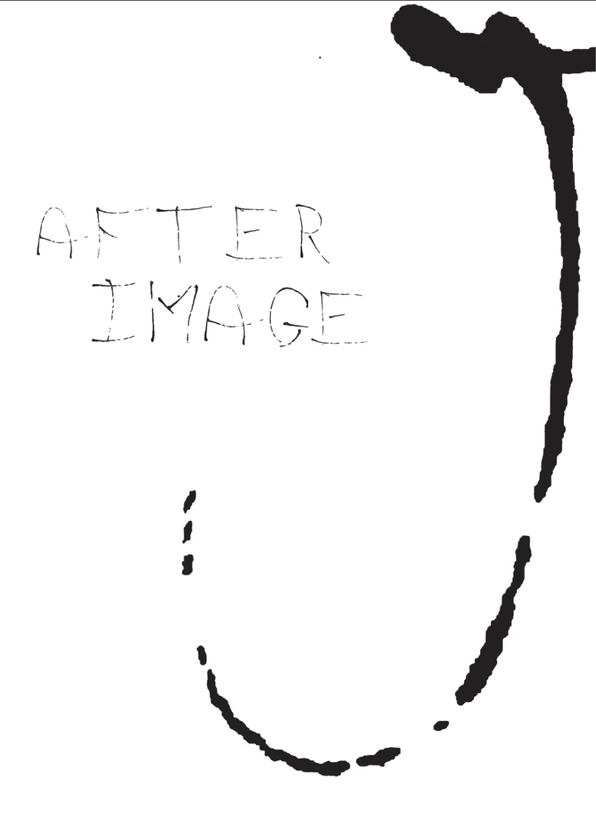
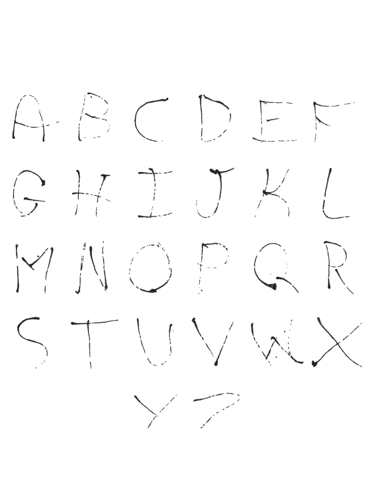
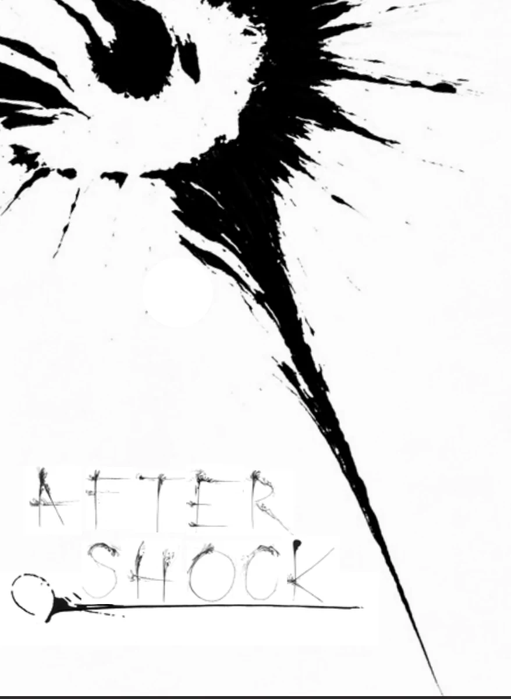
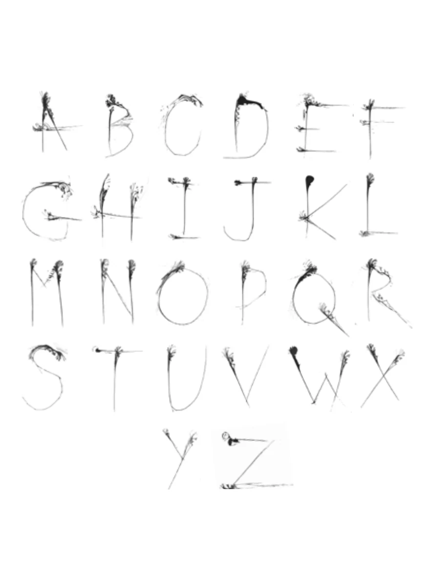
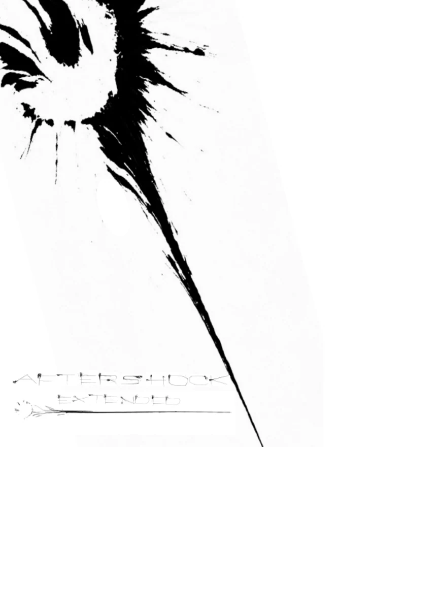
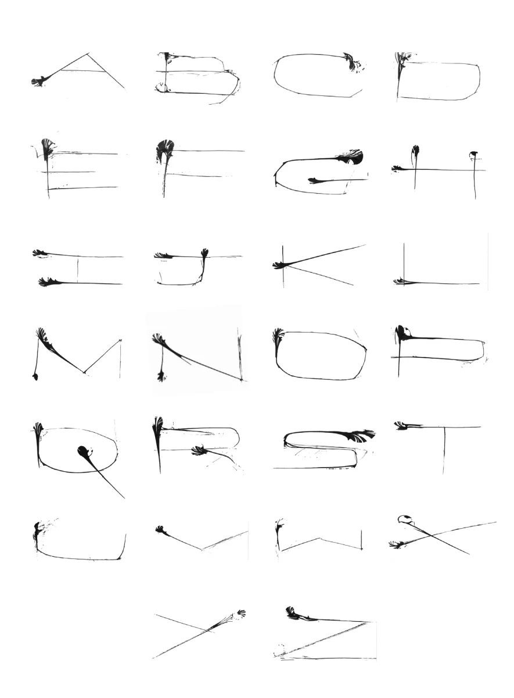

From object to feelings
J’ai dessiné trois typographies à partir d’un fil. Ses mouvements et ses tensions m’ont inspiré des lettres fines, déformées ou étirées. Je voulais qu’en regardant ces lettres, on puisse sentir comment le fil bouge et se tend.





